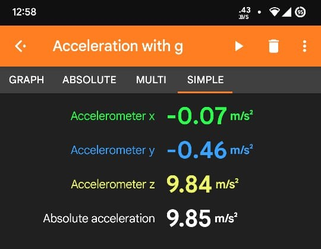

Designing, validating and testing compliant mechanisms
The objective was to create the slimmest CR2016/CR2025 battery holder that could be used with the pocket UV sensor that I have in mind. I looked into several mounting and older models of Casio and Citizen pocket radios, which used to be powered by CR2032 batteries. None of the designs satisfied me. The typical PCB-mounted battery holders can be up to 4 mm thick and pointy. We decided to employ a compliant mechanism to hold the battery after doing some study and talking with my brother. I assumed the battery couldn't be tightly clamped by a compliant device.
Maxwell’s equation for 3D, \(6-C = R\)
\(C =\) Number of Non-Redudant Constraint lines
\(R =\) Number of degrees of freedom
I designed a simple non-symmetrical flexure and printed it on my 3D printer. I was not expecting it to hold the battery (I lost the pictures and the part that was printed). The clamping force on the battery was surprisingly good. After this, I was convinced that a flexure can hold the battery on a PCB. By looking at the clamping force generated by 3D print we decided to use two PCBs sandwiched together as the negative terminal should have physical contact.
In my design, the total number of Non-Redudant constraints, \(C =4\). I plan to sandwich the two PCBs, so that makes \(R =2\). A fully constraint mechanism with \(R =0\) degrees of freedom can be achieved by adding double-sided copper/conductive tape on the bottom PCB. This will seize rotation in x-axis and translation in z-axis.

First attempt to calculate the deformation of the flexure.
The basic idea was to make a tapered section (cone) and push the tapered section coin, which would push the flexure arms. Ideally, this calculation would work if all the surfaces are frictionless. I used a 20mm coin with a taper of 15 degrees, printed using the small SLA printer in green translucent resin. This attempt was flawed; the experimental and simulation values were off by a large margin. This was because friction was not taken into account. All the parts used are 3D printed, so they have a poor surface finish. The dial indicator was preloaded using a large M20 nut, which I used for the gym equipment I'm designing. This was done in order to compensate for the spring forces in the plunger mechanism. The M20 nut's weight was close to 60g. I figured later that the spring could be removed from the inside of the dial indicator. I haven't been brave enough to use it without the spring, as the dial indicator is new. The total force acting on each of the arm is Â
\(F'\div3 sin(\theta)=F\) explainiation to the can be cound here
mass of the M16 nut \(m_{1} = 0.0338kg \)
mass of the M20 nut \(m_{2} = 0.06035kg\)
mass of the tapered coin \(m_{c}= 0.00165kg\)
acceleration due to gravity, \(g = 9.85m/s^2\) ;(determined from phone's acceleretrometer)
Dial indicator's measuring force determined \(m_{d}=\sim 0.062 kg\) ; Mitutoyo website mentions from 0.4-1.4N 

Pre-load added to compensate the sprint force, \(m_{s}=0.062kg\) ; \(m_{s}=m_{c}+m_{2}\) given by [\(0.062kg=0.00165kg+ 0.06305kg\)]
Force exerted by M16 nut which is equal to \(F'=0.3329N\) ; \(F'= m_{1}\times g\) given by [\(0.33293=9.85\times0.338\)]
The total force being exerted on each arm \(F= 0.428 N\) ; \(F'\div3 sin(\theta)=F\)
Total displacement in vertical direction experimentally, \(\Delta y_{exp}=0.20mm\)
When force of \(F_{s}= 0.428N\) was applied both in simulation and experimentally, the displacements are given below.
Total displacement of each arm experimentally in horizontal direction \(\Delta a_{exp}= 0.05359mm\) , which is given by \(\ 0.20mm \times tan(15^{\circ})= 0.053589Â mm \)
Total displacement of each arm in simulation in horizontal direction was \(\Delta a_{sim}= 0.283734mm\), this was solved using FEA.
There is a large error precisely \(0.23016 mm\) in the calculation, as any frictional forces were not taken into account (I was being lazy).
Second: Dial indicator showing 20microns of travel.
Third: Flexure and tapered coin setup.
Second attempt: Direct measurement
After a few days of taking a break, I decided to give this another attempt. This time, I decided to measure the deformation directly. Once again, by using large bolts, as my weight gauges are not super accurate, but this is what I have handy. I printed a small piece which I glued on to the arm.
Force exerted by M16 nut which is equal to \(F'=0.3329N\) ; \(F'= m_{1}\times g\) given by [\(0.33293=9.85\times0.338\)]
Total displacement of each arm experimentally in vertical direction \(\Delta a_{exp}= 0.14mm\) ,measured using dial indicator
Total displacement of each arm in simulation in vertical direction was \(\Delta a_{sim}= 0.218mm\), measured in SolidWorks using FEA.
This attempt had a lower error of \(70 microns\) about the diameter of a human's hair.
Material properties of the flexure
Because I was not able to find the material properties for the Fila3D filament I use. I went to polymaker's website and took the mechanical properties of their PLA. In my experience the ratios most filament brands use are similar and possess similar mechanical properties.
Conclusion
I am confident that this simple mechanism will securely hold the battery for the credit card-sized UV scanner. This project served as a tiny justification for me to finally get the dial indicator I had always desired. I want to take out the dial indicator's plunger spring in the future. Documenting this process was harder than I imagined. I hope to get a PCB made sooner or later. Having the comfort of access to two types of 3D printers (FDM and SLA) is certainly a luxury. I couldn't have done any of this if these printers weren't next to my desk. All the parts and fixtures were 3D printed. I had to wrap my head around this thing for hours to create a sensible looking design that would work. Along the way, I taught myself to get better with SolidWorks simulation, learned to set up dial indicators and got better at documenting math equations in LaTeX(HTML).